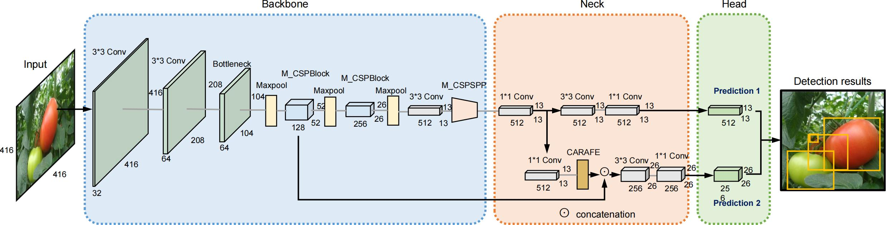
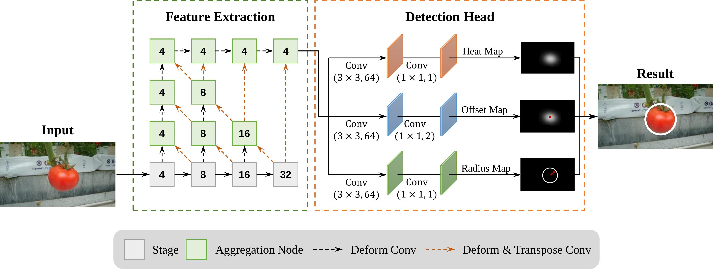
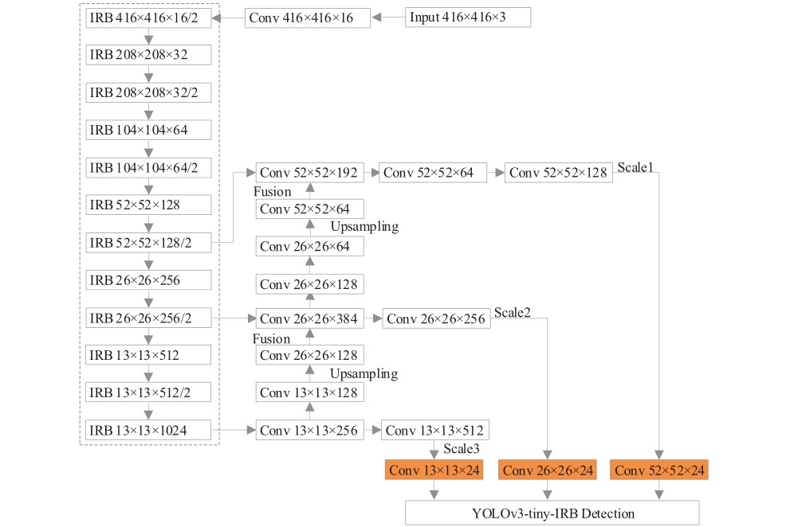
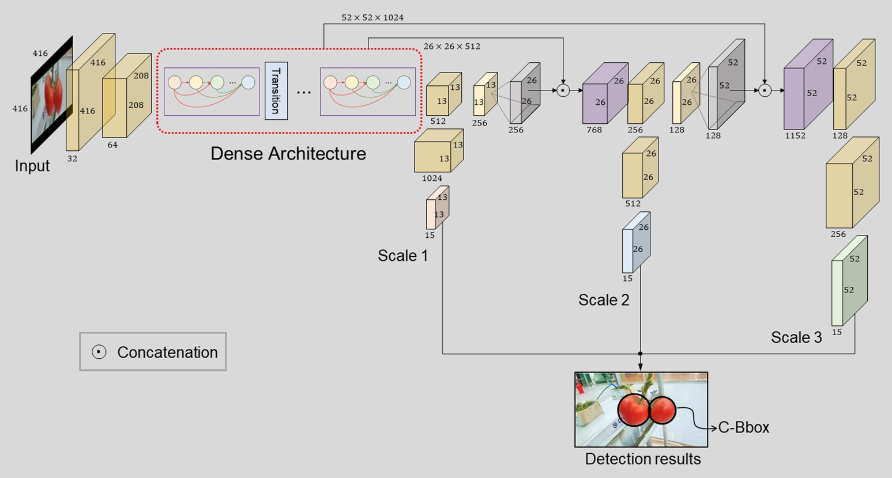

Guoxu Liu
Assistant Professor
School of Computer Engineering, Weifang University, Weifang
Office: 7309, Block VII
I am an assistant professor in Vision and Learning Group from School of Computer Engineering at Weifang University. I received my Ph.D degree from the Department of Electronics Engineering at Pusan National University in 2020, advised by Prof. Jae Ho Kim. Before that, I received my B.S. Degree in School of Information Science and Engineering from Shandong University in 2011 and M.S. Degree in School of Electrical and Electronic Engineering from Nanyang Technological University in 2014. My research interests include image processing, computer vision, and deep learning, etc.
News
| Mar 20, 2023 | One paper is accepted to Frontiers in Plant Science. It is available here. |
|---|---|
| Aug 5, 2022 | One paper is accepted to Frontiers in Plant Science. It is available here. |
| May 24, 2022 | Our paper YOLO-Tomato has been selected as the 2022 Best Paper Award by Sensors. [News] |
| Nov 29, 2021 | I joined Weifang University to continue my academic journey. |
| May 20, 2020 | I defended my Ph.D. thesis titled Machine Vision and Deep Learning Study for Tomato Detection System. |
| Apr 30, 2020 | The paper YOLO-Tomato is accepted to Sensors. |
| Apr 9, 2020 | One paper is accepted to 8th International Symposium on Sensor Science (I3S'2020). |
| Jan 2, 2020 | The paper "Facial Expression Recognition of Animated Human Characters" is accepted to ICMLC'2020. |
Selected Publications
-

An Efficient Tomato Detection Method based on Improved YOLOv4-tiny Model in Complex EnvironmentFrontiers in Plant Science , 2023PDF Online BibTeX@article{mbouembe2023efficient, author = {Mbouembe, Philippe Lyonel Touko and Liu, Guoxu and Sikati, Jordane and Kim, Suk Chan and Kim, Jae Ho}, title = {An efficient tomato-detection method based on improved YOLOv4-tiny model in complex environment}, journal = {Frontiers in Plant Science}, volume = {14}, year = {2023}, url = {https://www.frontiersin.org/articles/10.3389/fpls.2023.1150958}, issn = {1664-462X}, doi = {10.3389/fpls.2023.1150958} } -

TomatoDet: Anchor-free Detector for Tomato DetectionFrontiers in Plant Science , 2022PDF Online BibTeX@article{liu2022tomatodet, author = {Liu, Guoxu and Hou, Zengtian and Liu, Hongtao and Liu, Jun and Zhao, Wenjie and Li Kun}, title = {TomatoDet: Anchor-free Detector for Tomato Detection}, journal = {Frontiers in Plant Science}, volume = {13}, pages = {2725}, year = {2022}, url = {https://www.frontiersin.org/articles/10.3389/fpls.2022.942875/full}, issn = {1664-462X}, doi = {10.3389/fpls.2022.942875} } -

Diseases Detection of Occlusion and Overlapping Tomato Leaves Based on Deep LearningFrontiers in Plant Science , 2021 -

YOLO-Tomato: A Robust Algorithm for Tomato Detection based on YOLOv3Sensors , 2020 (Best Paper Award)PDF Webpage News BibTeX@article{liu2020yolo, author = {Liu, Guoxu and Nouaze, Joseph Christian and Touko, PhilippeLyonel and Kim, Jae Ho}, title = {YOLO-Tomato: A Robust Algorithm for Tomato Detection based on YOLOv3}, journal = {Sensors}, volume = {20}, number = {7}, pages = {2145}, year = {2020}, url = {https://www.mdpi.com/1424-8220/20/7/2145}, issn = {1424-8220}, doi = {10.3390/s20072145} } -
 Facial Expression Recognition of Animated Human CharactersInternational Conference on Machine Learning and Computing (ICMLC) , 2020PDF BibTeX
Facial Expression Recognition of Animated Human CharactersInternational Conference on Machine Learning and Computing (ICMLC) , 2020PDF BibTeX@inproceedings{liu2020facial, author = {Liu, Guoxu and Jin, Hui and Jiang, Hailong and Kim, Jae Ho}, title = {Facial Expression Recognition of Animated Human Characters}, booktitle = {Proceedings of the 2020 12nd International Conference on Machine Learning and Computing}, pages = {313--317}, year = {2020} } -
 A Robust Mature Tomato Detection in Greenhouse Scenes Using Machine Learning and Color AnalysisInternational Conference on Machine Learning and Computing (ICMLC) , 2019
A Robust Mature Tomato Detection in Greenhouse Scenes Using Machine Learning and Color AnalysisInternational Conference on Machine Learning and Computing (ICMLC) , 2019